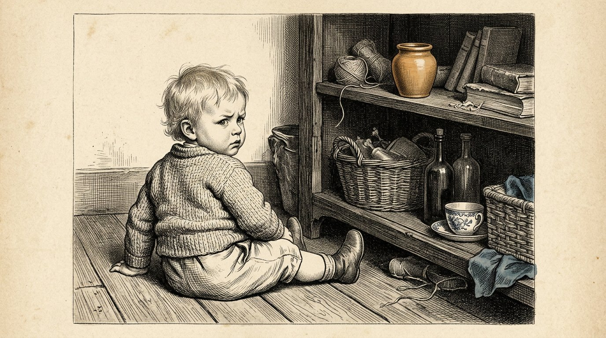
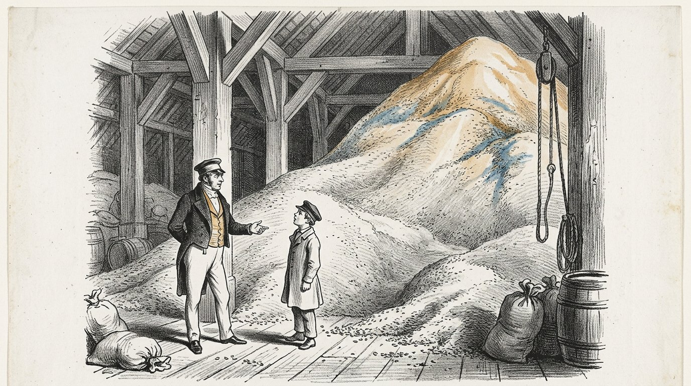
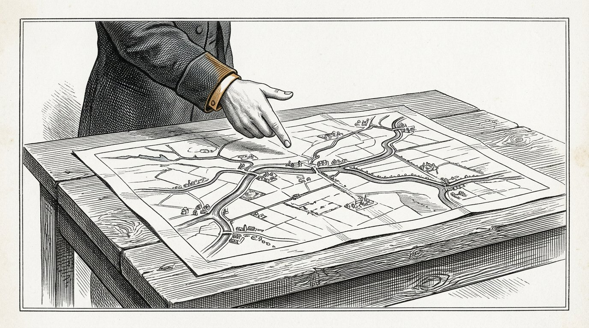
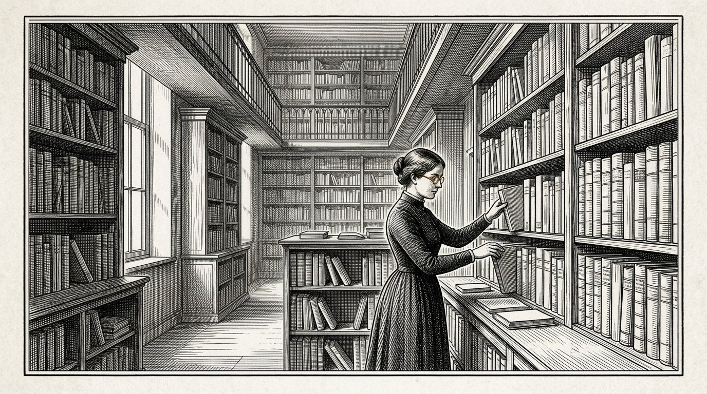
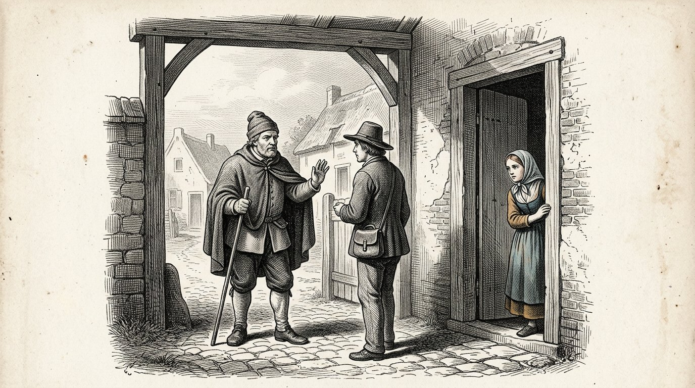
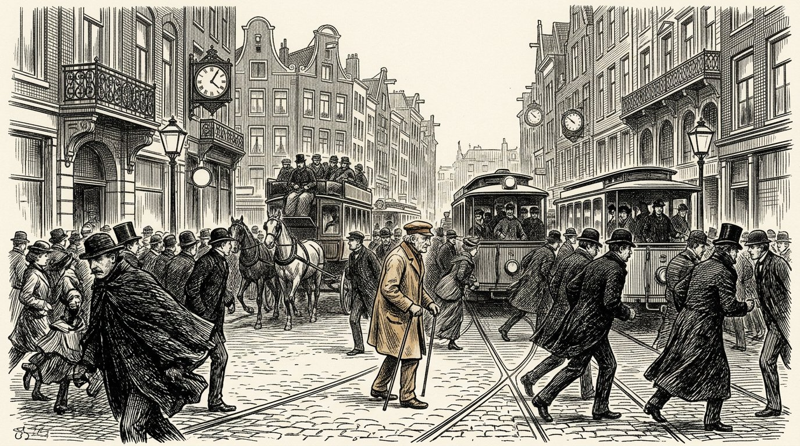

LIVRE TROIS
Le Kosaris
Le livre d'Anthea

LIVRE TROIS
Le livre d'Anthea
C'est le troisième livre des Kosaris, et ce n'est pas moi qui l'ai commencé.
Il commence par quatorze pages que j'ai écrites à vingt ans, sur ma grand-mère Demira et sur le vieil homme qui venait à la boulangerie le jeudi. Je les ai rangées dans un tiroir et je n'y ai pas touché pendant cinquante-deux ans. Quand je les ai retrouvées, je les ai trouvées trop sûres d'elles. Je n'y ai rien changé. J'ai ajouté une phrase au bas de la page, ainsi que la date.
Le premier livre parle des quatre piliers. Le deuxième parle de la distinction entre ce qui est établi et ce qui est admis. Celui-ci porte sur la question sous-jacente : comment élever un être humain de façon qu'il puisse porter cela.
Un être humain n'est pas un être simple. Il est un empilement de couches, dans l'ordre où elles se sont formées, et chaque couche ne peut apparaître que lorsque celle qui est au-dessous d'elle s'est solidifiée. Ce livre suit cet ordre et ne saute rien.
Sept jours. C'est le temps qu'il faut pour que l'œuf sache qu'il va poursuivre son chemin. Rien ne pénètre durant ces jours. Seule la forme se constitue.
Sept mois. Le reptile. L'enfant vit dans deux dimensions. Ce n'est pas une métaphore : un poisson et un lézard ont les yeux sur les côtés et voient tout autour d'eux, mais leurs deux yeux ne travaillent pas ensemble et il n'y a pas de profondeur. Plat et tout à la fois. Durant ces mois, l'enfant apprend à gouverner seul ses fonctions vitales : respirer, rester au chaud, éviter le danger. Ni attachement, ni empathie, ni reconnaissance de soi — mais intact et fiable à son propre niveau. Au bout de sept mois, cette couche est achevée, et pourtant un enfant ne naît généralement que vers le neuvième mois. Durant ces deux mois, rien de nouveau ne s'ajoute. La couche se solidifie. Une couche n'est pas achevée quand elle fonctionne ; elle l'est quand elle tient.
Sept ans. Le mammifère. Les yeux se placent vers l'avant, les deux images se mettent à travailler ensemble et la profondeur apparaît — la troisième dimension. Et avec la profondeur vient le sentiment. Il ne se solidifie ni comme une règle ni comme un savoir, mais comme une évidence vécue, et il ne se solidifie qu'auprès d'un être humain présent qui le reste durant des années. Ce qui ne se solidifie pas ici ne se solidifiera plus nulle part.
Ce qui ne doit pas encore intervenir durant ces sept années, c'est le temps. Un mammifère a des réflexes temporels — un rythme qui revient, la faim à heure fixe, un chien qui se tient à la porte à l'heure dite — mais il ne peut pas planifier. Il ne peut pas savoir que demain sera différent. C'est pourquoi ces sept années doivent s'écouler sans conscience du temps : ni horloge, ni calendrier, ni plus tard, ni objectif à cinq ans. Ce qu'il faut mettre en place durant ces années, c'est un socle réflexe sans notion du temps, et cela n'arrive que si nous tenons le temps à l'écart.
Ensuite vient l'être humain. Ce n'est qu'alors que s'ajoute la quatrième dimension : le temps. L'enfant peut penser à l'avance à un jour qui n'est pas encore là et déjà faire quelque chose en vue de ce jour. À partir de cet instant, tout ce que nous avons tenu à l'écart pendant sept ans peut y entrer, et cela y entre facilement, car il y a désormais quelque chose sur quoi le déposer. Le sentiment et l'intelligence avancent alors côte à côte, jusqu'à quatorze ans et jusqu'à vingt et un ans. À quatorze ans s'ouvre la capacité de regarder sa propre pensée. À vingt et un ans, l'intelligence peut prendre le relais — mais seulement dans la mesure où il existe en dessous une base affective suffisante pour le supporter.
Mais un être humain a plus de quatre dimensions. Il y en a sept : les trois de l'espace, le temps, puis encore la grandeur, la valeur et le nombre. La grandeur, c'est savoir quelle est la grandeur d'une chose et pas seulement savoir calculer cette grandeur. La valeur, c'est ce que vaut une chose, indépendamment du fait que quelqu'un la mesure. Le nombre, c'est pouvoir sentir qu'un seul cas ne signifie encore rien et que mille cas signifient quelque chose.
Ces trois dernières dimensions ne sont pas développées par notre éducation. Elles sont supprimées. Une école ramène tout à une seule mesure, elle appelle valeur ce qui peut figurer sur un bulletin, et elle apprend à calculer avec des nombres sans jamais y associer le moindre sentiment. Un enfant en sort avec quatre dimensions et croit que c'est tout.
Cette dernière condition est la raison d'être de ce livre. Une intelligence dépourvue de base affective ne prend pas le relais. Elle se laisse entraîner par la dernière personne qui lui a parlé.
Aujourd'hui, la deuxième ligne se situe bien plus tard dans la vie, et chez beaucoup elle n'apparaît pas. Ce n'est pas parce qu'on apprend moins. C'est parce qu'on a rempli de connaissances les années où un être humain est censé se tromper, et parce que manque la base affective sur laquelle ses erreurs pourraient venir se poser. Celui qui a fait trop peu d'erreurs n'a rien sur quoi fonder son jugement.
Soixante-dix-sept. Ce n'est pas un âge auquel un être humain apprend quelque chose. C'est le temps qui s'écoule avant que ce qu'un être humain a appris ne revienne chez quelqu'un qui ne l'a pas connu.
J'ai été infirmière pendant quarante-six ans. J'ai vu naître cent dix-neuf enfants et je n'en ai élevé aucun. C'est une lacune de ce livre, et je préfère le dire d'emblée plutôt que de laisser quelqu'un le découvrir après coup.
Lorsque je ne sais pas quelque chose, c'est indiqué.
Partie 1

Où il est question de ce qu’Anthea a écrit à vingt ans au sujet de sa grand-mère et du vieil homme, et de ce qu’elle y a ajouté cinquante-deux ans plus tard.

Je voyais des couleurs autour des gens. Je n’en ai parlé à personne pendant longtemps, parce que cela inquiétait ma mère, mais pas ma grand-mère, et qu’il était plus facile d’être chez ma grand-mère.
Je ne sais pas ce que c’était. Plus tard, j’ai étudié la question et je n’ai jamais trouvé de nom qui convienne. Les médecins ont des noms pour cela, mais ces noms ne recouvrent pas la réalité.
En revanche, je sais quand cela a disparu. C’est parti quand j’avais quatorze ans, l’hiver où mon grand-père est mort, et ce n’est jamais revenu.
J’en ai été affligée pendant trente ans.
À présent je suis vieille, et je vois les choses autrement. Je ne crois plus avoir perdu quelque chose. Je crois que quelque chose s’est ajouté par-dessus.
Quelque chose s’est ajouté, qui observait ce que je voyais et demandait si c’était bien vrai.
Cette chose n’est jamais repartie. Elle est encore là, et en ce moment même elle regarde cette phrase et demande si je le sais vraiment.
Je n’en suis pas sûre.
Mais en cinquante ans, j’ai vu la même chose se produire chez quinze enfants, à peu près au même âge, et ce n’est pas une preuve, mais ce n’est pas rien non plus.
Anthea écrit :Quelque chose s’ajoute qui observe. Ce n’est pas la fin de l’enfant. C’est la seconde couche qui s’ouvre.

Ma grand-mère pesait chaque sac de farine. Je l’ai vue le faire cinq mille fois et je ne l’ai jamais regardée comme on regarde quelque chose d’exceptionnel, car c’est ainsi quand on est petit.
Je croyais que peser faisait partie de la préparation du pain.
Elle ne m’a jamais expliqué pourquoi elle le faisait. Elle ne m’a jamais dit que c’était important ni que je devais m’en souvenir.
Elle pesait, et je me tenais à côté d’elle.
Quand j’avais dix-sept ans et que j’ai commencé à travailler à la clinique, le premier jour, j’ai recompté les flacons dans l’armoire, et l’infirmière m’a demandé pourquoi je faisais cela, et j’ai répondu que je n’en savais rien.
Je n’en savais rien.
Ce n’est que bien plus tard que j’ai compris que cela me venait de la boulangerie.
Ce que j’en ai appris est le plus désagréable de tout ce livre : la chose la plus importante que ma grand-mère m’ait enseignée, elle ne me l’a jamais enseignée.
Elle l’a fait sous mes yeux.
Tout ce qu’elle m’a expliqué, avec des mots, dans l’intention que je m’en souvienne, je l’ai oublié.
Anthea écrit :Un enfant n’adopte pas ce que vous dites. Il adopte ce que vous faites tandis que vous dites autre chose.

Le vieil homme venait à la boulangerie le jeudi, et j’y étais souvent, parce que j’aimais y être.
Il demandait toujours la même chose, et il la demandait toujours différemment.
Il ne demandait jamais ce que je savais. Il demandait comment je le savais.
Quand j’avais huit ans, cela m’agaçait, car je voulais raconter ce que je savais, et c’était beaucoup.
Quand j’avais onze ans, je me mettais à y réfléchir à l’avance. Je réfléchissais à ce que je répondrais s’il posait la question, et cela m’a fait regarder autrement ce que je voyais.
C’est ce qu’il faisait. Il ne m’a jamais rien appris. Pendant trois ans, il m’a posé la même question, jusqu’à ce que je commence à me la poser moi-même avant qu’il n’entre.
Et alors il s’est arrêté.
Je lui ai demandé pourquoi, plus tard, quand j’avais dix-neuf ans. Je lui ai demandé pourquoi il avait cessé.
Il a dit : « Parce que tu l’as maintenant toi-même. »
Je lui ai alors dit qu’il aurait pu le dire. Cela aurait fait gagner beaucoup de temps.
Il a dit que ce n’était pas vrai, et il avait raison, et il m’a encore fallu vingt ans pour comprendre pourquoi.
Une question qu’on vous pose, vous pouvez y répondre.
Une question que vous vous posez vous-même, vous ne pouvez plus la mettre de côté.
Anthea écrit :N’apprenez pas la réponse à l’enfant. Posez la question si souvent que l’enfant se l’approprie.
Partie II
Partie 2

Où rien ne vient de l'extérieur et où l'on ne fait que mettre en place la forme dans laquelle quelque chose pourra entrer plus tard.

Il s'écoule sept jours avant qu'un ovule fécondé ne s'implante.
Sept jours durant lesquels il est en chemin et où, pour autant que nous puissions le voir, rien ne se passe qui vaille la peine d'être nommé.
Rien ne s'y ajoute. Rien n'est nourri. Il n'y a aucun lien avec la mère, et la mère ne sait rien.
On ne fait que donner forme.
Je n'ai jamais vu cela de mes propres yeux et je ne le verrai jamais. Je le sais par les livres et je le précise, car dans ce livre, presque tout le reste vient de ce que j'ai moi-même observé.
Pourtant, je l'écris, et voici pourquoi.
À la clinique, j'ai vu cent fois des gens s'impatienter au cours d'une phase où rien ne se passe. Ils veulent que quelque chose entre. Ils veulent nourrir, parler, apprendre, toucher.
Et la première semaine d'un être humain est une semaine où rien ne vient de l'extérieur et où le seul travail consiste à mettre en place la forme dans laquelle quelque chose pourra entrer plus tard.
Celui qui veut déjà donner quelque chose pendant cette semaine le donne à quelque chose qui n'existe pas encore.
Ainsi en va-t-il au début, et ainsi en va-t-il à chaque phase qui suit.
Anthea écrit :Pour que la vie puisse commencer, il faut que la forme existe. Cette semaine-là, rien ne se passe, et ce rien est le travail.

Il y avait, dans la même rue, deux maisons où l'on attendait un enfant la même année.
Dans l'une, on avait tout préparé. Un berceau était arrivé, le nécessaire aussi, ainsi que des couvertures, et tout était repassé dans une armoire.
Dans l'autre maison, tout cela était également arrivé, et, en plus, quelque chose s'était produit que personne n'avait remarqué.
La femme qui y vivait s'était mise à manger à heures fixes. Elle se couchait à la tombée de la nuit et se levait au lever du jour, et cela depuis déjà quatre mois avant l'arrivée de l'enfant.
Elle ne le faisait pas pour l'enfant. Elle le faisait parce qu'elle dormait mal et que quelqu'un lui avait dit que cela aiderait.
J'ai suivi ces deux enfants jusqu'à leur deuxième année.
Le second dormait. Le premier, non.
Je ne sais pas si cela y était pour quelque chose. Il y avait encore dix autres différences entre ces deux maisons, et je n'en ai mesuré aucune.
Mais depuis, j'ai dit la même chose à toute femme qui voulait l'entendre, et je le dis ici aussi :
Le rythme d'une maison doit être là avant l'arrivée de l'enfant.
Une horloge qui ne se met à faire tic-tac que lorsqu'il y a quelque chose à mesurer n'est pas une horloge. C'est une réaction.
Anthea écrit :Installez le rythme avant l'arrivée de l'enfant. Une horloge qui ne se met à faire tic-tac que lorsqu'il y a quelque chose à mesurer n'est pas une horloge.

Dans chaque maison, quelqu'un décide de ce qui entre.
Ce n'est généralement personne en particulier, et ce n'est jamais décidé à l'avance. C'est celui qui dit : chez nous, on ne fait pas ça, ou : laisse-le entrer, ou : cet homme ne passe pas.
J'ai vu ce qui se passe lorsque cette personne n'existe pas.
Il y avait une famille où tout le monde était le bienvenu et où tout entrait. Des voisins arrivaient, des histoires arrivaient, une radio arrivait, puis tout un tas de choses apparurent sur un écran, et jamais personne ne disait que quelque chose ne devait pas entrer.
On s'en félicitait. On appelait cela une maison ouverte.
Les enfants de cette maison ont grandi avec tout.
Ce qui leur a manqué, c'est une seule personne qui, de temps à autre, retienne quelque chose.
Il ne s'agit pas de retenir beaucoup de choses. Dans cette maison, presque rien n'était véritablement nuisible.
Il s'agit pour un enfant de faire l'expérience de quelqu'un qui se tient à la porte.
Celui qui n'en a jamais fait l'expérience n'en construit pas davantage lui-même.
À trente ans, il est ouvert à tout ce qui passe, il appelle cela de l'ouverture d'esprit, et il ne l'a jamais choisi.
Anthea écrit :Quelqu'un doit se tenir à la porte avant que quelque chose ne se présente à la porte. Un enfant qui n'a jamais vu cela ne construit pas de porte lui-même.
Partie III
Partie 3

Où l'on regarde à plat et tout autour, et où se mettent en place les fonctions vitales — respirer, rester au chaud, éviter le danger — et où il apparaît qu'une couche n'est achevée que lorsqu'elle tient dans la durée.

Regardez un poisson.
Ses yeux sont placés sur les côtés de sa tête. Il voit à gauche, il voit à droite, et il voit à peu près tout ce qui l'entoure en même temps. Il n'y a presque aucun endroit d'où l'on puisse l'approcher sans qu'il le voie.
Cela semble préférable à ce que nous avons, et sous un certain rapport, ça l'est.
Mais il voit à plat.
Ses deux yeux ne travaillent pas ensemble. Chacun regarde de son côté, et rien en lui ne superpose les deux images. C'est pourquoi il ne sait pas à quelle distance se trouve une chose. Il sait qu'il y a quelque chose, et à peu près où cela se trouve, rien de plus.
Un lézard est pareil.
C'est ce que j'appelle dans ce livre les deux dimensions. Non pas une idée — une manière de regarder. Tout autour, à plat, tout en même temps, sans profondeur.
Pour ce que ces animaux doivent faire, c'est suffisant. Fuir n'exige aucune profondeur. Pour fuir, il suffit de savoir qu'il y a quelque chose.
Un enfant dans le ventre de sa mère n'a pas besoin de cette profondeur non plus, car rien n'y est éloigné.
Tout ce qui existe le touche.
Anthea écrit :Les deux dimensions ne sont pas une idée, mais une manière de regarder : tout autour, à plat, tout en même temps, sans profondeur. Pour fuir, c'est suffisant.

Un enfant s'exerce à respirer des mois avant qu'il y ait de l'air.
Il accomplit le mouvement dans le liquide où il repose. Il n'aspire rien, car il n'y a rien à aspirer. Il accomplit seulement le mouvement, des milliers de fois, sans qu'il mène à quoi que ce soit.
Je l'ai senti de ma main chez une femme au septième mois. Une série de petites poussées, quatre ou cinq à la suite, puis le silence.
Elle pensait que c'était le hoquet, et c'est bien cela, en quelque sorte, tout en étant autre chose.
C'est un être qui répète un geste pour lequel le monde n'existe pas encore.
Lorsque l'enfant naîtra, il devra respirer en quelques secondes. Il n'y aura alors pas le temps d'apprendre. Il n'y aura pas de premier essai.
Tout ce qui devra alors se produire aura été exercé pendant sept mois dans l'obscurité.
Un reptile vit dans deux directions. Il avance et il va de côté, et il reste attaché à la surface sur laquelle il repose. Il ne grimpe pas, il ne saute pas, et il n'a aucune notion du dessus.
C'est ainsi qu'un enfant repose lui aussi durant ces mois. Il tourne et il glisse, mais il n'y a ni dessus ni dessous, puisqu'il flotte.
C'est pourquoi j'appelle dans ce livre le reptile la première couche, et non la plus basse.
Il y a dans un être humain une part qui se met en ordre elle-même, sans que personne y soit présent et sans qu'il y ait quoi que ce soit à apprendre d'un autre.
Cette part n'a besoin ni d'amour, ni de paroles, ni d'encouragement.
Elle a besoin de calme et de temps, et c'est la seule part d'un être humain qui soit achevée avant sa naissance.
Anthea écrit :La première couche répète dans l'obscurité un geste pour lequel le monde n'existe pas encore. Cette couche n'a pas besoin d'amour. Elle a besoin de calme.

Un enfant dans le ventre de sa mère a toujours la même chaleur.
Il ne la règle pas lui-même. Il reçoit la chaleur de sa mère et n'a rien à faire pour cela, et cela dure sept mois.
Puis il naît, et en l'espace d'une heure il doit commencer à le faire lui-même.
C'est la transition la plus rude d'une vie humaine, et elle dure environ un jour.
J'ai vu des enfants qui y parvenaient tout de suite et d'autres qui n'y parvenaient pas, et la différence ne tient pas à l'amour qu'ils ont reçu.
C'est pourquoi nous posons un nouveau-né contre sa mère, et non dans un berceau. Non par tendresse. Parce qu'un corps en réchauffe un autre pendant que celui-ci apprend à le faire lui-même.
Ce que j'en ai appris ne vaut pas seulement pour la chaleur.
Il y a des choses qu'un être humain reçoit d'abord d'un autre, puis qu'il doit ensuite commencer à produire lui-même.
S'il doit les produire trop tôt, cela tourne mal. S'il les reçoit trop longtemps d'un autre, il ne l'apprendra jamais.
Pour la chaleur, il s'agit d'heures, et nous pouvons le voir.
Pour tout ce qui vient ensuite, cela dure des années, et nous ne le voyons pas.
Anthea écrit :Ce qu'un être humain reçoit d'abord d'un autre, il doit ensuite le produire lui-même. Trop tôt, cela tourne mal ; trop tard, il ne l'apprend jamais.

Une trappe s'est refermée dans la clinique, et une femme enceinte jusqu'aux yeux a sursauté.
Et sous sa main, l'enfant a sursauté lui aussi.
Elle l'a senti, elle m'a regardé et elle a dit : « Il a entendu. »
Je lui ai alors dit qu'il ne l'avait pas entendu comme nous entendons, et c'est ce qu'on dit, et je ne sais plus aujourd'hui si c'était exact.
Ce qui s'est passé, en tout cas, c'est ceci : un stimulus violent est survenu, et un retrait a suivi, sans rien entre les deux.
Pas de pensée. Pas de réflexion. Pas de question pour savoir si c'était dangereux.
C'est la troisième fonction vitale, et la plus importante des trois, car respirer et rester au chaud maintiennent un être en vie, tandis qu'éviter le danger le maintient intact.
Dans ma vie, j'ai connu trois personnes chez qui ce réflexe ne fonctionnait pas correctement.
Elles n'étaient pas courageuses. Le courage est autre chose ; c'est avoir peur et avancer malgré tout. Elles n'avaient pas peur.
Toutes trois sont mortes jeunes, et je ne peux dire d'aucune que cela venait de cette seule cause.
Mais je l'écris parce qu'aujourd'hui nous faisons beaucoup d'efforts pour éviter aux enfants d'avoir peur.
La frayeur n'est pas un dommage.
La frayeur est la couche la plus ancienne qui soit, et elle était là avant toute autre chose.
Anthea écrit :Éviter le danger n'est ni de la peur ni de la faiblesse. C'est la couche la plus ancienne, et elle était là avant toute autre chose.

Au bout de sept mois, le reptile est achevé.
Tout ce dont un corps a besoin pour se diriger lui-même est alors en place. Respirer, la chaleur, sursauter. Un enfant né au septième mois peut rester en vie, et ce n'est pas un miracle, mais le résultat ordinaire d'une couche achevée.
Et pourtant, un enfant ne naît généralement que deux mois plus tard.
Je m'en suis longtemps étonné, et je n'ai pas trouvé la réponse.
Voici ce que j'ai observé. Durant ces deux mois, rien de nouveau ne vient s'ajouter. Aucune nouvelle fonction ne se met en place. L'enfant prend du poids, sa peau s'épaissit, ses poumons s'élargissent, et c'est presque tout.
La couche est achevée, et elle se consolide.
Chez les enfants nés trop tôt, j'ai vu quelle était la différence. Ils pouvaient tout faire. Ils le pouvaient moins longtemps.
C'est ainsi que j'ai fini par le comprendre, et je précise d'emblée que ce sont mes propres mots, non ceux d'un médecin :
une couche n'est pas achevée lorsqu'elle fonctionne. Elle l'est lorsqu'elle tient dans la durée.
Qui clôt une phase au moment où il constate qu'elle fonctionne la clôt deux mois trop tôt.
Anthea écrit :Une couche n'est pas achevée lorsqu'elle fonctionne. Elle l'est lorsqu'elle tient dans la durée.
Partie IV
Partie 4

Où la troisième direction s’ajoute et où le sentiment se fige, non comme une règle, mais comme une évidence vécue — et où la quatrième direction est encore tenue à l’écart pendant sept ans.

Il vient un jour où un enfant se redresse en s’agrippant.
Il était couché, il était assis, il se traînait sur le sol — puis il saisit le bord d’une chaise et se redresse, il est debout, et il tombe.
Ce qui s’ajoute ce jour-là, c’est la troisième direction.
Elle avait commencé plus tôt, et elle avait commencé dans les yeux.
Le mammifère a les yeux tournés vers l’avant. Il voit moins que le poisson — tout un monde se trouve derrière lui, qu’il ne voit pas et pour lequel il doit se retourner.
En échange, ses deux yeux voient la même chose depuis deux endroits, et quelque chose en lui superpose ces deux images.
C’est ainsi que naît la profondeur.
À partir de cet instant, il n’y a pas seulement le fait que quelque chose existe, mais aussi la distance qui l’en sépare. Il y a la possibilité de saisir. Il y a ce qui est trop loin. Il y a ce qui est presque à portée.
Un nouveau-né ne possède pas encore cela. Il faut des mois pour que ses yeux apprennent à travailler ensemble, et cela se fait spontanément, sans que personne ne le voie.
Tant qu’un enfant est au sol, il vit comme vivait le reptile : en avant et sur les côtés. Il n’y a pas de hauteur qu’il puisse atteindre lui-même.
À partir du moment où il se tient debout, il y a la hauteur. Il y a quelque chose de trop loin pour être saisi. Il y a une table sur laquelle repose quelque chose. Il y a la chute.
Et avec elle s’ajoute autre chose, qui commence au même instant et que personne ne met en rapport avec la troisième direction.
L’enfant se retourne.
Il se redresse en s’agrippant, se met debout, puis tourne la tête pour voir si quelqu’un l’a vu.
J’ai observé cela chez un très grand nombre d’enfants, et cela se produit toujours au cours de la même semaine que la station debout.
Le mammifère ne se détache pas de l’espace. Il vient avec l’espace.
Celui qui a de la hauteur peut tomber. Celui qui peut tomber a besoin de quelqu’un qui regarde.
Anthea écrit :Avec la troisième direction vient le mammifère. Celui qui a de la hauteur peut tomber, et celui qui peut tomber se retourne pour voir si quelqu’un veille avec lui.

J’ai vu naître cent dix-neuf enfants en quarante-six ans.
Un nouveau-né fait quatre choses durant la première semaine. Il respire, il boit, il dort et il hurle.
C’est tout. Cela paraît peu, et c’est presque tout ce qui se fixe au cours d’une vie humaine.
Car ce qui se passe durant cette semaine, ce n’est pas que l’enfant apprenne quelque chose. C’est que le corps établisse dans quel monde il est arrivé.
Est-ce que quelqu’un vient quand je hurle, ou non.
Il n’y a rien de plus. C’est une seule question, et la réponse ne vient pas en paroles, mais dans la rapidité avec laquelle quelqu’un arrive.
J’ai vu des enfants auprès desquels quelqu’un venait toujours, des enfants auprès desquels quelqu’un venait le plus souvent, et des enfants pour lesquels cela variait.
La variation est le pire. Je ne le sais pas par un livre, je le sais pour l’avoir observé, et je précise d’emblée que je ne l’ai pas mesuré et que je n’en suis donc pas certaine.
Mais je l’ai vu trop souvent pour ne pas l’écrire.
Un enfant supporte peu de choses. Un enfant ne supporte pas l’imprévisible.
Anthea écrit :Durant la première semaine, un être humain n’apprend rien. Durant la première semaine, il est établi si le monde répond.

Il y avait un enfant qui avait cinq personnes pour s’occuper de lui. Ce n’était pas par indifférence. La mère travaillait, le père travaillait, et il y avait deux grands-mères et une voisine, qui s’en occupaient tous avec plaisir.
L’enfant allait bien. On ne le laissait jamais seul, il ne manquait de rien, et il y avait toujours quelqu’un pour venir.
J’ai suivi cet enfant parce qu’il était venu dans notre clinique pour un problème à l’oreille.
Ce qui m’a frappée ne m’est apparu qu’au bout d’un an.
Quand l’enfant devenait agité, la mère disait : tu es fatigué. L’une des grands-mères disait : tu as faim. L’autre disait : tu es impatient. La voisine disait : tu veux sortir.
Toutes les cinq l’aimaient, et toutes les cinq avaient parfois raison.
Mais l’enfant recevait cinq noms pour un seul sentiment dans son corps.
Un enfant ne sait pas spontanément ce qu’est la faim. Il éprouve quelque chose d’inconfortable. Il n’apprend ce que c’est que parce que quelqu’un répète chaque fois le même mot pour le même sentiment.
Cet enfant ne l’a pas appris. Il s’est mis à deviner.
Il est devenu un enfant aimable et un bon élève, et il n’a jamais été soigné pour quoi que ce soit.
À dix-neuf ans, il m’a dit, dans la même clinique, sur la même chaise : "Je ne sais jamais ce que je ressens."
Anthea écrit :Un enfant n’apprend pas ce qu’est la faim par la faim. Il l’apprend parce que la même personne prononce chaque fois le même mot pour la même sensation.

Un enfant de cinq mois ne comprend pas un mot.
Il lit un visage plus vite que vous ne pouvez le composer.
Je l’ai vérifié une centaine de fois, car je n’y croyais pas au début. Je me suis assise auprès d’une mère et je lui ai demandé de dire quelque chose d’amical tout en pensant à quelque chose de pénible.
L’enfant le savait. À chaque fois.
Non parce qu’il est intelligent. Parce qu’il n’a rien d’autre. Il n’a pas de mots, il n’a donc que le visage, et il regarde ce visage comme vous regardez un bulletin météorologique quand vous devez prendre la mer.
C’est pourquoi il ne sert à rien de se montrer gai avec un bébé quand on ne l’est pas.
Ce qui fonctionne, en revanche, et c’est là l’étrangeté, c’est simplement d’être là sans faire semblant d’être gai.
J’ai connu une mère qui avait perdu son mari lorsque l’enfant avait trois mois. Elle ne pouvait pas être gaie et ne faisait plus aucun effort pour le paraître.
Elle était simplement là. Chaque jour, pendant des heures, triste et présente.
Cet enfant s’en est bien sorti.
Un enfant peut supporter une tristesse qui est là. Un enfant ne peut pas supporter un visage qui dit autre chose que ce qu’il ressent, car alors le monde ne concorde plus, et il ne peut pas encore demander ce qu’il en est.
Anthea écrit :Ne faites pas semblant. L’enfant vous lit avant que vous puissiez parler.

Il vient un jour où un enfant vous regarde, puis regarde autre chose, puis revient à vous pour voir ce que vous en pensez.
C’est nouveau. Il ne le pouvait pas le mois précédent.
À partir de cet instant, l’enfant ne s’intéresse plus seulement à ce qui se passe, mais à ce que vous pensez de ce qui se passe.
C’est le début de tout ce qui s’appellera plus tard le sentiment, et c’est aussi le début de tout ce qui tournera mal par la suite.
Car, à partir de là, il l’intériorise.
Si vous avez peur des chiens, l’enfant aura peur des chiens dans trois ans, et vous ne lui aurez jamais rien dit à leur sujet.
J’ai pu suivre cela dans quatre familles parce que je suis restée assez longtemps auprès d’elles.
Cela ne passe pas par les mots. Cela passe par cet instant où l’enfant revient à votre visage et voit ce qui s’y trouve.
C’est pourquoi c’est la période la plus éprouvante de toute la vie pour être éducateur.
Il n’y a rien à faire. Il n’y a qu’à être.
Anthea écrit :Dès que l’enfant se retourne pour voir ce que vous en pensez, vous transmettez ce que vous êtes, et non ce que vous dites.

Il y avait un chien dans le port qui se tenait chaque après-midi à quatre heures moins dix devant l’école.
On disait qu’il savait lire l’heure, ce qui est absurde, mais il était bien là, chaque jour, et jamais en retard.
J’ai un jour observé ce qu’il faisait avant de partir.
Il était couché près des filets. À un moment donné, il se levait et partait.
Rien n’avait changé dans le port. Il n’y avait pas de cloche, personne ne partait, rien n’était visible.
Il le savait dans son corps.
Et pourtant, cet animal ne sait pas planifier.
Si, le mercredi, vous aviez voulu lui faire comprendre que l’école serait fermée le jeudi, cela aurait été impossible. Pas difficile. Impossible.
Il y est allé le jeudi, s’est retrouvé devant une porte close, puis y est retourné le vendredi.
C’est là la différence, et elle est plus grande qu’il n’y paraît.
Un rythme du corps n’est pas le temps. C’est un réflexe qui revient.
Le temps est autre chose. Le temps, c’est savoir que demain sera différent d’aujourd’hui et agir dès maintenant en conséquence.
Un mammifère en est incapable, et un enfant de quatre ans aussi.
Anthea écrit :Un rythme du corps n’est pas le temps. C’est un réflexe qui revient. Le temps, c’est savoir que demain sera différent.

Il y a un mot auquel je ne me suis jamais habituée à la clinique : plus tard.
Une mère dit à un enfant de quatre ans : plus tard.
Elle veut bien faire. Elle veut dire : pas maintenant, mais cela viendra.
L’enfant n’entend pas ce qu’elle veut dire, car pour l’entendre, il faudrait pouvoir concevoir demain, et il ne le peut pas encore.
Ce que l’enfant entend, c’est non.
Et parce qu’il entend non tandis que sa mère veut dire oui, quelque chose ne concorde pas, et l’enfant ne peut pas dire quoi.
J’ai vu cela se produire une centaine de fois et je n’en ai rien dit une centaine de fois, car que pourrait-on bien dire dans ce cas ?
En revanche, j’ai vu ce qui se passe chez ceux qui font autrement.
Ils ne disent pas plus tard. Ils disent : d’abord ceci, ensuite cela. Puis ils font d’abord la première chose devant l’enfant, et ensuite l’autre.
L’enfant n’a alors rien à franchir. Il lui suffit de regarder.
Cela demande davantage de temps au parent. C’est tout le prix à payer.
Nous avons inventé ce mot pour ne pas payer ce prix.
Anthea écrit :Pour un enfant de quatre ans, le mot plus tard ne contient aucune promesse. Il entend non. Dites : d’abord ceci, ensuite cela, et faites-le devant lui.
Partie V
Partie 5

Où les quatre piliers ne sont pas enseignés mais vécus, où se pose la couche inférieure qui, par la suite, ne s'ouvre plus, et où il apparaît que le parent ne peut pas y parvenir seul — car un parent s'écarte, tandis qu'un autre enfant de six ans ne s'écarte pas.

J'ai vu ce qui suit à trois reprises, et c'est la raison pour laquelle je me suis mis à écrire ce livre.
Des gens qui savent tout faire viennent à la clinique. Ils sont intelligents, travailleurs, ils ne sont pas méchants.
Et pourtant, quelque chose en eux, tout au fond, ne va pas, et rien de ce que l'on fait ne l'atteint.
On peut leur parler et ils comprennent tout ce qu'on leur dit. Ils peuvent le répéter. Ils sont d'accord avec vous.
Et rien ne change.
Il m'a fallu longtemps pour accepter qu'il existe quelque chose que les mots ne permettent pas d'atteindre.
La couche supérieure d'un être humain vous transforme au cours d'une conversation. La couche intermédiaire vous transforme en un an ou en dix.
La couche inférieure est celle qui se forme au cours des sept premières années, et elle ne change plus. Ni en parlant, ni en étudiant, ni par la seule volonté.
Je n'écris pas cela pour déclarer quelqu'un désespéré. Une personne dont la couche inférieure est de travers peut mener une vie bonne et heureuse, et j'en ai connu beaucoup.
Je l'écris parce que cela signifie que les sept premières années ne sont pas l'une des étapes.
Elles sont la seule étape où l'on puisse atteindre la couche inférieure.
Anthea écrit :La couche supérieure change au cours d'une conversation. La couche inférieure change en sept ans, et plus jamais ensuite.

J'ai un jour entendu un paysan dire qu'on aménage une terre une seule fois dans sa vie, puis qu'on la travaille deux cents fois.
Il en va de même pour un enfant.
Au cours des sept premières années, on aménage. Ensuite, on travaille.
Ce qui entre en nous durant ces sept années, ce n'est pas le savoir. Le savoir vient plus tard et s'acquiert facilement.
Ce qui entre, ce sont quatre choses, et je les appelle comme j'ai fini par les appeler à la clinique.
La première est la suivante : quelqu'un vient quand j'appelle.
La deuxième : ce qui est dit correspond à ce qui se passe.
La troisième : j'ai le droit de casser quelque chose et je suis malgré tout toujours le bienvenu.
La quatrième : quelqu'un me juge digne qu'on me consacre du temps, même si cela ne rapporte rien.
Ce sont les quatre piliers, mais tels qu'un enfant de trois ans les vit. L'enfant n'en connaît pas les mots et ne les connaîtra jamais de cette manière.
Il sait seulement si c'était vrai.
Anthea écrit :Les quatre piliers ne s'enseignent pas. Ils se vivent, ou non, au cours des sept premières années.

Un enfant de quatre ans brisa un verre.
Il y a trois façons dont cela peut se terminer, et je les ai toutes vues cent fois.
La première consiste à gronder l'enfant. Il apprend alors qu'une erreur est dangereuse et se met à cacher ses erreurs. À trente ans, cet enfant cachera encore ses erreurs.
La deuxième consiste à ne rien faire : la mère ramasse le verre et poursuit ce qu'elle faisait. L'enfant apprend alors qu'une erreur n'est rien. À trente ans, cet enfant laissera traîner ses affaires sans s'en apercevoir.
La troisième consiste pour la mère à dire : le verre est cassé, nous allons le ramasser ensemble, attention à tes doigts.
Alors il se produit quelque chose qui ne se produit pas dans les deux autres cas.
L'enfant apprend qu'une erreur a une conséquence et non une punition, que cette conséquence peut être assumée, et qu'ensuite tout redevient normal.
C'est tout le secret de ce livre, et il tient dans un seul geste domestique.
J'ai entendu des parents appeler cela : être strict. Ce n'est pas être strict. Être strict, c'est la première manière.
C'est laisser l'enfant avec la conséquence.
Anthea écrit :La punition apprend à cacher. Ne rien faire apprend l'indifférence. La conséquence apprend à assumer.

Une jeune mère vint à la clinique après avoir tout lu. Elle avait lu trois livres et connaissait les schémas.
Son enfant pleurait et elle regardait l'horloge.
Le livre disait qu'un enfant pouvait pleurer vingt minutes après avoir été nourri, qu'il s'endormirait ensuite de lui-même, et c'était vrai, car c'est bien ce qui se passe.
Elle faisait les choses correctement, selon le livre.
Je ne lui en ai rien dit pendant trois mois, car ce n'était pas à moi de le faire.
Au quatrième mois, elle m'a elle-même demandé ce que j'en pensais, et je le lui ai dit.
Je lui ai dit : « Vous regardez l'horloge. Regardez l'enfant. »
Elle a répondu que le livre avait été écrit par quelqu'un qui s'y connaissait.
C'était vrai. Je le lui ai dit aussi.
Je lui ai alors demandé si le livre connaissait son enfant.
Elle s'est mise à pleurer, et je suis restée assise sans rien dire, car il n'y avait rien à dire. Pendant quatre mois, elle avait fait ce qu'une personne raisonnable lui avait conseillé.
Il y a deux sortes de savoir. Il y a le savoir de ce qui est vrai en général, et c'est un vrai savoir, qui a beaucoup de valeur.
Et il y a le savoir de qui se trouve devant vous.
Le premier peut se lire. Pour le second, il faut regarder.
Anthea écrit :Le livre dit vrai. Le livre ne connaît pas votre enfant.

Derrière le port, il y avait une rue où les enfants jouaient sans aucun adulte.
Ce n'était pas une décision. C'était simplement ainsi.
Des choses s'y produisaient qui n'arrivaient pas à la maison. On se poussait. On en excluait certains. On prenait quelque chose à quelqu'un, et l'on pleurait.
Cela durait généralement une demi-heure, puis c'était terminé, et personne n'avait joué les médiateurs.
J'ai vu plus tard ce que cette rue avait produit.
À la maison, un parent s'adapte. Il n'y peut rien, et c'est aussi une bonne chose qu'il le fasse. Il amortit. Il fait un pas de côté pour que l'enfant puisse passer.
Un autre enfant de six ans ne fait pas cela. Il ne s'écarte pas.
C'est là qu'un enfant apprend où il s'arrête lui-même.
Je ne sais pas comment reproduire cela à la maison, et je ne crois pas que ce soit possible.
La rue n'existe plus. Il y circule désormais des véhicules, les enfants sont à l'intérieur, et lorsqu'ils se voient, c'est convenu par deux mères qui ont accordé leurs horaires.
On ne s'y pousse pas.
Anthea écrit :Un parent s'écarte. Un autre enfant de six ans ne s'écarte pas. C'est là que l'enfant apprend où il s'arrête lui-même.

Il y avait un garçon de sept ans qui séjournait dans notre clinique avec un bras cassé et qui ne parlait pas.
Ce n'était pas par entêtement. Il avait appris que ses paroles étaient vérifiées, et préférait donc ne rien dire.
Il y avait un chien dans la propriété. Il n’appartenait à personne en particulier.
Le chien vint se coucher près de lui, et le garçon posa sa bonne main sur le dos de l'animal ; ils restèrent ainsi une heure.
Je l'ai ensuite entendu parler à ce chien. Pas beaucoup, et pas très joliment, mais il parlait.
Un animal ne demande pas que l'on justifie ce que l'on dit.
Il ressent sans les mots, réagit sans explication, accepte ou refuse et n'a honte de rien.
Un enfant qui se trouve auprès d'un animal découvre qu'il y a en lui quelque chose qui ne relève pas du langage, et que cette chose existe aussi chez les autres êtres vivants.
On ne peut pas expliquer cela à un enfant.
Il faut un chien.
Anthea écrit :Un animal ressent sans langage et refuse sans honte. C'est ainsi que l'enfant découvre que son propre ressenti ne se compose pas de mots.

Au cours de la leçon du samedi, les enfants recevaient un lopin de terre. Pas un chacun : un seul pour tous, derrière la maison, sur le quai, à peu près grand comme une pièce.
Il a été travaillé pendant neuf ans par des enfants toujours différents.
Ils y ont essayé toutes sortes de choses. Il y a eu une année où rien n'a poussé. Une autre où il y a eu trop de récolte et où tout a pourri.
Ce que les enfants y ont appris ne figure dans aucun cahier.
Ils savent quelle odeur prend la terre lorsque le vent tourne. Ils savent que tout commence la troisième semaine de mars, même si le calendrier dit autre chose. Ils savent qu'une plante qui sort trop vite ne va généralement pas jusqu'au bout.
J'ai entendu l'une d'elles, à trente ans, dire que, lorsqu'elle devait prendre une décision, elle pensait toujours à quelque chose qui avait poussé trop vite.
Elle ne savait plus d'où cela lui venait.
La nature ne ment pas, ne flatte pas et ne s'adapte pas à l'enfant. Elle fait ce qu'elle fait.
Pour un enfant, il n'existe pas d'interlocuteur plus honnête, ni aucun qui exige autant de patience.
Anthea écrit :La nature ne flatte pas et ne s'adapte pas. Un enfant qui suit un même lopin de terre pendant des années apprend une mesure qui ne figure dans aucun cahier.
Partie VI
Partie 6

Où l'esprit s'ouvre et où tout entre, pourvu que le sentiment sous-jacent se soit solidifié et qu'on ne l'explique pas trop tôt.

Après sept ans, quelque chose apparaît qui n'existait pas auparavant, et ce n'est pas une direction dans l'espace.
L'enfant peut soudain aller de l'avant.
Non pas marcher — cela, il le savait déjà. Aller de l'avant dans le temps. Il peut penser à un jour qui n'est pas encore là et déjà faire quelque chose pour lui.
Je l'ai vu nettement une fois.
Il y avait un garçon de sept ans qui fabriquait un bateau en bois, et le matin il ne l'a pas mis à l'eau parce que le vent devait se lever dans l'après-midi.
L'année précédente, il l'aurait aussitôt mis à l'eau et l'aurait perdu.
Personne ne lui avait parlé du vent.
C'est la quatrième direction, et c'est la première qui n'a rien à voir avec le corps.
À partir de cet instant, tout ce que nous avons tenu à l'écart pendant sept ans peut s'y ajouter. L'horloge. La semaine. Le calendrier. Faire d'abord ce qui sera payant plus tard. Épargner. Attendre.
Tout cela entre maintenant facilement, car il y a quelque chose sur quoi le déposer.
Qui l'y introduit plus tôt le dépose sur rien.
Alors il obtient un enfant qui sait lire l'heure et qui, intérieurement, ne sait toujours pas que demain existe, et personne ne voit cette différence, car l'enfant dit les bonnes choses.
Anthea écrit :Le temps est la première direction qui n'a rien à voir avec le corps. Il vient après sept ans, et il entre facilement, pourvu qu'il y ait alors quelque chose sur quoi le déposer.

Il se passe quelque chose autour de la septième année, et cela va vite.
L'enfant peut soudain raisonner. Il peut penser en termes de si-alors. Il peut appliquer une règle à un cas qu'il n'a encore jamais rencontré.
C'est l'âge auquel on commence l'école dans presque tous les pays, et ce n'est pas un hasard ; on l'a découvert partout séparément.
Ce qui entre maintenant entre facilement. Calcul, lecture, langues, musique. Tout.
Mais il y a quelque chose que l'on dit rarement.
Cela entre dans la couche qui se trouve au-dessus.
Si la couche inférieure est de travers, l'enfant devient un bon élève sur une base bancale, et personne ne s'en aperçoit, car les notes sont bonnes.
Je l'ai souvent vu et je n'ai jamais rien pu y faire, car un enfant qui a de bonnes notes ne reçoit pas d'aide.
Cela remonte à la surface lorsque l'enfant a dix-huit ans, ou vingt-cinq, ou quarante.
Le plus souvent, quarante.
Anthea écrit :À partir de sept ans, l'enfant apprend tout. Ce qu'il apprend prend place sur le sol qui est déjà là.

Il y avait deux personnes qui racontaient des histoires aux enfants.
L'une racontait, puis se taisait.
L'autre racontait, puis demandait : et que signifie cette histoire pour toi ?
Elles étaient toutes deux de bonnes personnes et la seconde faisait davantage d'efforts.
Je me suis assis auprès de l'une et de l'autre, et j'ai regardé les enfants, pas la conteuse.
Chez la première, les enfants restaient assis un instant après la fin. Certains regardaient dans le vide. Puis ils reprenaient ce qu'ils faisaient.
Chez la seconde, les mains se levaient aussitôt.
La différence est là. Une histoire agit sur une couche qui n'emploie pas de mots. Elle dépose un schéma de la manière dont les choses se terminent, et ce schéma s'enfonce et reste là.
Quand on demande aussitôt ce que cela signifie, on le fait remonter avant qu'il ait eu le temps de s'enfoncer.
Alors les enfants ont une belle conversation, et l'histoire a disparu.
Je l'ai dit un jour à la seconde conteuse et elle s'est mise en colère, ce que je comprends, car elle faisait davantage d'efforts que la première.
Anthea écrit :Racontez l'histoire et taisez-vous. Ce que vous faites aussitôt remonter n'a jamais eu le temps de s'enfoncer.

Un enfant de cinq ans demande cent fois par jour pourquoi.
On dit aux parents qu'ils doivent répondre à ces questions, et c'est généralement un bon conseil.
Mais j'ai connu un père qui faisait autrement, et j'ai vu cet enfant grandir ; je vais donc l’écrire.
Il répondait à environ la moitié des questions. Pour l'autre moitié, il disait : "Je ne sais pas. Comment pourrions-nous le découvrir ?"
C'est une réponse déplaisante pour un enfant de cinq ans, et l'enfant s'en fâchait aussi régulièrement.
Mais cet enfant s'est mis à poser ses questions autrement.
Au bout d'un moment, il s'est mis à dire lui-même : "Je pense que c'est comme ça, parce que j'ai vu que..."
Il faisait cela à six ans.
Les enfants auxquels on répondait à tout demandaient encore pourquoi à douze ans, et s'attendaient toujours à ce que quelqu'un le sache.
Il y a une différence entre un enfant qui sait et un enfant qui sait trouver, et le premier ne mène pas automatiquement au second.
Le plus souvent, il n'y mène pas.
Anthea écrit :Répondez à la moitié. Pour l'autre moitié, demandez comment vous pourriez trouver la réponse ensemble.

Une note indique la qualité de la réponse.
Elle ne dit rien de la manière dont la réponse a été trouvée.
Deux enfants obtiennent un huit. L'un a réfléchi et trouvé la réponse. L'autre a deviné, et bien deviné.
Ils obtiennent la même note et apprennent tous deux quelque chose, et ce qu'apprend le second est la chose la plus dangereuse qui soit.
Pendant le cours du samedi, j'ai essayé autre chose, et je ne sais pas si c'était une bonne idée.
J'ai donné deux notes. Une pour la réponse et une pour la manière dont ils l'avaient trouvée.
La seconde note pouvait être supérieure à la première. Un enfant qui s'était trompé mais avait bien cherché obtenait un quatre et un neuf.
Les enfants l'ont compris plus vite que les parents.
Les parents regardaient la première note.
Au bout de six mois, les enfants se sont mis à demander la seconde.
Anthea écrit :Donnez deux notes. Une pour la réponse et une pour le chemin qui y mène.
Partie VII
Partie 7

Où sont décrits les cinquième, sixième et septième axes — grandeur, valeur et nombre — et où il apparaît que l'instruction ne les enseigne pas, mais les ôte.

Il y avait à l'école du quai un garçon qui, un lundi, perdit son grand-père et manqua, la même semaine, une interrogation.
Pour avoir manqué l'interrogation, il reçut une remarque.
Pour avoir perdu son grand-père, il reçut du maître, à la porte, un mot aimable.
Je ne dis pas que le maître avait mal agi. Il ne pouvait rien faire de plus.
Ce que j'écris, c'est ce que le garçon en apprit, et c'est autre chose que ce que le maître avait voulu lui apprendre.
Il apprit qu'il n'existe qu'une seule mesure selon laquelle on règle les comptes, et que son grand-père n'y trouve pas sa place.
À l'école, toutes les choses sont ramenées à la même mesure. Une interrogation manquée, une opération négligée, un livre oublié, une dispute dans la cour et un grand-père mort passent tous les cinq par le même guichet et en ressortent tous les cinq sous la forme d'une remarque ou de l'absence de remarque.
Ainsi, un enfant n'apprend pas quelle est la grandeur des choses.
Et qui n'apprend pas quelle est la grandeur des choses ne sait pas, à quarante ans, lesquelles de ses inquiétudes lui appartiennent.
Il reste éveillé à cause d'un courriel et dort pendant un divorce.
Anthea écrit :À l'école, un livre oublié et un grand-père mort passent par le même guichet. Ainsi, un enfant n'apprend jamais quelle est la grandeur des choses.

J'ai un jour demandé à une classe d’enfants de onze ans combien de temps duraient mille jours.
Ils savaient le calculer. Tous les seize.
Ils ont divisé par trois cent soixante-cinq et sont arrivés à presque trois ans, ce qui était juste.
Alors je leur ai demandé ce qu'ils faisaient trois ans plus tôt.
Le silence s'est fait, puis les réponses sont venues : j'étais dans une autre classe, ma petite sœur n'était pas encore née, nous habitions encore près du port.
Et c'est à ce moment-là que je l'ai vu se produire chez deux d'entre eux.
Ils ont levé les yeux. Quelque chose était passé du nombre à leur corps.
Les quatorze autres avaient donné la bonne réponse et n'avaient rien ressenti.
La grandeur, ce n'est pas calculer quelle est la grandeur d'une chose. C'est savoir quelle est sa grandeur.
Nous apprenons très bien aux enfants la première chose. Nous ne faisons presque rien pour la seconde, et la seconde est la seule des deux qui mène quelque part.
Un homme capable de calculer qu'une dette dure dix ans, mais qui ne sait pas ce que représentent dix ans, signe cette dette.
Anthea écrit :Calculer la grandeur d'une chose et savoir quelle est sa grandeur sont deux choses différentes. Nous n'exerçons que la première.
Le petit-fils d'Alkion savait estimer un bateau.
Il regardait un navire entrer dans le port et disait quelle quantité de cargaison il transportait ; il se trompait rarement de plus d'un dixième.
Il n'avait rien appris pour cela. Il avait grandi avec cette connaissance.
Je lui ai demandé comment il s'y prenait, et il n'a pas su le dire. Il disait qu'il le voyait à la profondeur du navire et à sa position par rapport à la jetée.
Le fait est qu'il disposait d'une mesure extérieure à lui-même, qui restait toujours la même : la jetée.
Un enfant qui grandit parmi des choses qui ne changent pas acquiert une telle mesure. Le clocher. La largeur de la rue. Le temps nécessaire pour aller jusqu'à l'autre côté.
Un enfant qui grandit parmi les écrans ne l'acquiert pas, car tout y est de même grandeur. Une souris, un éléphant et une galaxie sont tous aussi larges que l'image.
Je ne sais pas ce qui vient à la place.
J'ai longtemps cherché et je n'ai rien trouvé.
Anthea écrit :Un enfant apprend la grandeur auprès de quelque chose qui ne change pas. Sur un écran, tout est aussi large que l'image.

Un œil est un muscle.
Qui regarde l'horizon le relâche. Qui enfile un fil dans une aiguille le contracte. Qui regarde au-delà de l'eau, puis sa main, puis de nouveau au-delà de l'eau, change de mise au point cent fois par heure.
Ce changement n'est pas fatigant. C'est à cela qu'un œil est destiné.
Un écran se trouve toujours à la même distance.
Pendant quatre heures, le muscle reste dans une seule position. Il ne change pas et ne se repose pas, car l'immobilité n'est pas un repos pour un muscle qui doit changer.
À cela s'ajoute que, devant un écran, les deux yeux n'ont rien à faire. Il n'y a pas de profondeur. Il y a un plan à un demi-mètre, et les deux images qu'ils reçoivent sont presque identiques.
C'est précisément ainsi qu'a commencé la troisième dimension : deux yeux qui voient la même chose depuis deux endroits.
Sur un écran, ce n'est plus nécessaire.
Et il y a encore autre chose. Sur un écran, tout est de même grandeur, car tout remplit l'image. Et sur un écran, tout est maintenant, car quelque chose d'autre arrive toujours immédiatement.
Je n'ai pas mesuré cela et je ne suis pas ophtalmologue.
Mais lorsque je compte ce qu'un écran ôte, j'arrive à trois choses : la profondeur, la grandeur et le temps.
Ce sont les trois choses dont parle ce livre.
Anthea écrit :Un écran en ôte trois à la fois : la profondeur, la grandeur et le temps. Tout à un demi-mètre, tout de même grandeur, tout maintenant.

Sur le bulletin figurent huit matières.
Ce qui n'y figure pas : si l'enfant a aidé quelqu'un. S'il a achevé quelque chose que personne ne lui avait demandé. S'il a persévéré lorsque les choses se compliquaient. S'il a été honnête alors qu'il aurait été plus facile de ne pas l'être.
Tout cela est apprécié, en paroles, par des gens bien.
Mais cela ne figure pas sur le papier qui rentre à la maison.
Un enfant de huit ans n'est pas idiot. En un an, il voit laquelle des deux choses compte.
Je l'ai entendu un jour, littéralement. Une fille de neuf ans a dit à sa mère : « C'est bien gentil, mais ça ne compte pas. »
Elle l'a dit sans tristesse. Elle établissait un fait.
La valeur, c'est ce que vaut une chose, indépendamment du fait que quelqu'un la mesure.
Un enfant qui apprend que valeur et mesure sont la même chose le gardera toute sa vie, et c'est la maladie la plus ordinaire de notre époque.
Ces gens ne sont ni cupides ni superficiels. Ils n'ont simplement jamais appris quelque part comment apprécier ce qui ne figure sur aucune liste.
Anthea écrit :La valeur, c'est ce que vaut une chose, indépendamment du fait que quelqu'un la mesure. Un enfant qui confond les deux continuera de les confondre toute sa vie.

Il y a une question que les adultes posent aux enfants avec de bonnes intentions : est-ce réel, ou est-ce que tu l'imagines ?
Chez un enfant de cinq ans, cette question cause du tort.
Non que la distinction n'existe pas. Elle existe et c'est la plus importante de toutes ; le deuxième livre tout entier lui est consacré.
Mais un enfant de cinq ans n'a pas encore deux étagères où poser les choses. Il n'en a qu'une, et tout y repose.
Quand on le force à choisir, il ne choisit pas. Il apprend que quelque chose ne va pas avec l'étagère.
Ce qui fonctionne, et je l'ai vu chez une mère qui ne l'avait appris de personne, c'est de placer la distinction dans le récit plutôt que dans l'enfant.
Elle racontait une histoire et, à la fin, disait : et ceci est une histoire.
Rien de plus. Pas de question. Pas de contrôle.
L'enfant recevait la seconde étagère sans qu'on lui eût jamais rien retiré.
À huit ans, il a posé lui-même la question. Il a demandé : est-ce une histoire ou est-ce arrivé ?
Et elle lui disait lequel des deux c'était, et elle n'a jamais rien fait de plus.
Anthea écrit :Placez la distinction entre le réel et l'inventé dans le récit, pas dans l'enfant. Vous lui tendez la seconde étagère ; vous ne lui retirez pas la première.

Au marché, j'ai entendu un homme dire à son fils qu'une chose était bon marché et donc bonne.
La semaine suivante, j'ai entendu un autre homme dire à son fils qu'une chose était chère et donc bonne.
Ils avaient tous deux tort, et tous deux de la même manière.
Les deux garçons apprirent que le prix disait quelque chose de la valeur.
Il y avait un troisième homme, qui était pêcheur et achetait de la corde.
Il ne prit ni la plus chère ni la moins chère. Il prit un morceau dans ses mains, tira dessus et observa la façon dont il était toronné, puis dit à son fils : regarde, celui-ci est trop lâchement toronné, il s'étire.
Il ne mentionna pas le prix.
Vingt ans plus tard, son fils avait un chantier naval.
Je ne dis pas que cela en fut la cause. Je dis que ce garçon, à dix ans, avait tenu quelque chose dans ses mains et avait appris à sentir si c'était solide, sans qu'aucun chiffre y fût attaché.
C'est l'axe de la valeur, et on ne l'enseigne pas parce qu'il n'est pas évaluable.
Anthea écrit :Qui apprend à son enfant que le prix dit quelque chose de la valeur lui donne une mesure qui le trompera toute sa vie.

Une nouvelle arriva au village : quelque part, très loin, six mille personnes avaient péri.
On la lut, on dit que c'était épouvantable, puis on poursuivit sa journée.
La même semaine, un garçon du village tomba d'un échafaudage et se cassa la jambe, et l'on en parla pendant trois semaines.
Je ne l'ai pas condamné et je ne le condamne pas davantage aujourd'hui. L'être humain est fait ainsi, et je ne suis pas différent.
Mais j'ai réfléchi à ce que cela signifiait.
Nous avons le sens de l’un. Nous n'avons pas le sens du millier.
Pour une personne, nous savons exactement quoi faire. Nous y allons, nous apportons de la soupe, nous restons auprès d'elle.
Pour six mille, nous ne savons rien faire. Il n'y a pas d'action qui corresponde.
Et puisqu'il n'y a pas d'action qui corresponde, rien ne se ressent non plus.
Je pense que c'est la plus coûteuse des trois dimensions manquantes, car tout ce qui va mal aujourd'hui va mal à des échelles qu'aucun être humain ne peut ressentir.
Nous avons besoin de gens capables de ressentir six mille.
Je ne sais pas comment on l'enseigne. Je sais seulement que nous n'essayons pas.
Anthea écrit :Nous avons le sens de l’un, et pas celui du millier. Tout ce qui va mal aujourd'hui va mal à des échelles que personne ne peut ressentir.

Il y avait au village une femme qui disait que le nouveau médecin n'était pas bon.
Sa raison était que sa voisine l'avait consulté et que cela ne l'avait pas aidée.
Un seul cas.
Cette année-là, il y en avait eu deux cent quarante, et les deux cent trente-neuf autres patients étaient satisfaits ; elle l'ignorait et n'aurait d'ailleurs pas pu le savoir.
Mais elle ne s'était pas renseignée non plus.
C'est l'autre face de la même dimension, et elle est aussi grave que la première.
Qui n'a pas le sens du nombre ne peut sentir qu'un seul cas ne signifie encore rien, pas plus qu'il ne peut sentir que mille cas signifient quelque chose.
Il pèse tout à l'aune de ce qu'il a lui-même vu.
Ce n'est pas de la bêtise. C'est exactement ce que fait un être humain sans le sixième axe.
Et c'est pourquoi, dans un village, on peut chasser un bon médecin et garder un mauvais, sans que personne ne veuille faire de mal.
Anthea écrit :Sans le sens du nombre, l'être humain pèse tout à l'aune de ce qu'il a lui-même vu. Un seul cas devient une vérité et mille cas ne deviennent rien.

Theia m'a un jour demandé, lorsqu'elle avait seize ans, pourquoi les gens du village prenaient soin les uns des autres lors d'une fête des récoltes, mais pas lorsqu'il s'agissait de décider du sort de l'arrière-pays.
Je lui ai alors dit quelque chose que je pense encore.
À la fête des récoltes, on les voit.
Ils sont quatre-vingts sur la place, on les voit tous les quatre-vingts et l'on sait quels visages leur appartiennent.
Lorsqu'il s'agit de décider du sort de l'arrière-pays, il est question de gens qui ne sont pas là. Ils habitent trop loin pour venir et ils sont trop nombreux pour qu'on les énumère.
Ils ne comptent donc pas, et personne n'a décidé qu'ils ne compteraient pas.
Dans ma vie, je n'ai connu qu'une personne capable de faire cela. C'était Sofia, lorsqu'elle était maire.
À chaque réunion, chaque fois, elle disait la même phrase, et cela agaçait tout le monde :
Ils sont encore huit cents à ne pas être assis ici.
Elle l'a dit plus de mille fois.
C'est la seule chose que j'aie jamais vue fonctionner.
Anthea écrit :Celui qui n'est pas assis ici ne compte pas, et personne ne l'a décidé. Il n'y a qu'un seul moyen : le dire à voix haute, chaque fois.
Partie VIII
Partie 8

Où l'on exerce trois choses que personne ne mesure : le silence, le corps et le droit de dire qu'on ne sait pas.

Il y avait un garçon de neuf ans qui construisait quelque chose.
Il s'en occupait depuis le matin et il était si absorbé qu'il ne leva pas les yeux quand je passai près de lui.
À onze heures, la cloche sonna et le maître dit que c'était l'heure du calcul, et le garçon rangea ses affaires.
Il le fit sans grogner. C'était un enfant docile.
J'ai vu cela et je n'en ai rien dit, car ce n'était pas ma classe et cela ne me regardait pas.
Mais cet hiver-là, par curiosité, je l'ai compté.
Pendant onze matinées, j'ai noté combien de fois un enfant entièrement absorbé par quelque chose en était tiré par l'emploi du temps.
C'est arrivé en moyenne quatre fois par matinée.
Un enfant entièrement plongé dans quelque chose est alors en train d'apprendre de la seule manière dont s'apprennent les choses profondes. On peut aussi apprendre les faits à côté. Pas les structures.
L'emploi du temps est là pour porter la journée.
Nous en avons fait quelque chose qui commande à la journée, et le programme est ainsi devenu maître précisément de l'instant que nous devrions protéger.
Anthea écrit :Quand un enfant est entièrement plongé dans quelque chose, déplacez l'emploi du temps. Pas l'enfant.

Au cours du samedi, nous avons essayé pendant six mois quelque chose que personne ne comprenait.
Nous avons commencé par le silence. Dix minutes. Pas de consigne, pas les yeux fermés, ne pas compter sa respiration. S'asseoir, et rien de plus.
Les quatre premières semaines, c'était insupportable. Les enfants bougeaient, ricanaient et se regardaient. Deux parents ont demandé pourquoi ils envoyaient leur enfant.
La sixième semaine, quelque chose s'est produit.
Un silence qui ne venait pas de moi s'est installé.
Ce que j'ai remarqué ensuite, c'est qu'après ces dix minutes les enfants travaillaient autrement. Pas mieux dans leurs calculs. Autrement. Ils regardaient plus longtemps une chose avant de commencer.
Je me suis trompé une fois et je l'écris parce que c'est l'erreur que tout le monde commet.
Il y avait un garçon qui perturbait la séance et je lui ai dit qu'il n'avait qu'à aller s'asseoir en silence sur le côté.
En une phrase, j'avais ainsi transformé le silence en punition.
Il a fallu trois mois pour que cela disparaisse.
Anthea écrit :Le silence n'est ni une pause ni une punition. C'est la seule leçon où un enfant puisse s'entendre lui-même.

Une fille de onze ans est venue me voir parce qu'elle ne voulait pas aller dans une certaine maison.
Elle ne pouvait pas dire pourquoi. Elle disait seulement qu'elle ne s'y sentait pas bien.
Sa mère a dit ce que dit toute mère raisonnable : tu connais à peine ces gens, tu ne peux pas te faire une opinion sur eux comme ça.
C'est vrai, et c'est bien intentionné, et c'est précisément par cette phrase que tout commence.
J'ai alors posé une autre question. Je lui ai demandé où elle le ressentait.
Elle a montré son sternum.
Nous en avons parlé, et rien n'en est sorti. Il n'en est jamais rien sorti. À ce jour, je ne sais pas s'il se passait quelque chose dans cette maison.
Ce n'est pas non plus le propos de cette histoire.
Le propos, c'est qu'après cette conversation la fillette savait toujours où elle le ressentait.
Si sa mère avait eu raison — et sa mère avait peut-être raison —, elle ne l'aurait plus su.
Un corps n'est pas le véhicule d'une tête. Il signale quelque chose. Ce qu'il signale n'est pas toujours exact.
Mais un enfant à qui l'on apprend que le signal lui-même ne compte pas éteint l'appareil.
Anthea écrit :Prenez au sérieux le message du corps. Prendre au sérieux ne signifie pas donner raison.

Au cours du samedi, il y avait un garçon qui a dit quelque chose dont je ne savais que faire.
Nous avions un problème sur un navire qui parcourait une certaine distance en un certain nombre d'heures, et il a dit que ce n'était pas possible.
Je lui ai demandé pourquoi.
Il a dit : « Je ne sais pas pourquoi. Ça ne colle pas. »
La réaction raisonnable consiste à dire qu'on ne peut pas dire une chose pareille, qu'il faut l'étayer, et qu'on ne peut pas calculer avec un sentiment.
C'est la réaction que j'ai eue.
Il s'est tu et, l'année suivante, il n'a plus jamais rien dit de semblable.
Deux semaines plus tard, un pêcheur est passé, a vu le problème au tableau et a dit qu'aucun navire ne parcourait cette distance dans ce laps de temps, car il aurait alors dû remonter le courant.
Le problème venait d'un livre publié dans un pays sans marées.
Le garçon n'avait pas calculé le courant. Il avait vécu seize ans dans un port.
J'ai alors compris ce que j'avais fait. Je n'avais pas rejeté sa réponse. J'avais rejeté la seule source dont il disposait, et cette source fonctionnait.
Ce que j'aurais dû dire est depuis lors inscrit sur mon mur :
Je te crois quand tu dis que ça ne colle pas. Cherchons d'où cela vient.
Anthea écrit :« Je ne sais pas, mais ça ne colle pas » est une réponse valable. C'est le début de toute recherche qui mène quelque part.

Il y avait, au cours du samedi, une fille qui avait toujours juste. Chaque problème, pendant trois ans.
Un jour, je lui ai donné un problème qui ne pouvait pas être résolu. Je l'ai fait exprès et je précise tout de suite qu'après coup, je n'en suis pas fier.
Elle y a travaillé pendant une heure et demie.
Puis elle s'est mise à pleurer.
Elle ne pleurait pas parce que le problème était difficile. Elle pleurait parce qu'elle pensait que quelque chose n'allait pas chez elle.
Je lui ai alors dit que le problème était faux et que je le savais au moment où je le lui avais donné.
Elle était furieuse, et elle avait raison.
Mais trois semaines plus tard, elle m'a demandé si je voulais recommencer, et si, cette fois, je pouvais ne pas lui dire lequel c'était.
Nous avons fait cela pendant un an. Chaque samedi, six problèmes, dont un parfois impossible.
C'est la seule élève que j'aie eue qui ne panique pas quand quelque chose n'aboutit pas.
Et c'est la seule qui, à treize ans, ait osé dire à un adulte : « Votre question n'est pas valable. »
Anthea écrit :Donnez de temps en temps à l'enfant un problème impossible. Sinon, il apprendra que tout problème est juste.

J'ai écrit dans le deuxième livre à propos du maître qui se mettait à dire comment il savait ce qu'il savait.
Je veux inscrire ici le passage qui ne s'y trouve pas.
La première année a été épouvantable pour lui.
Les enfants ne le prenaient plus au sérieux. Ils avaient appris qu'un maître sait, et qu'un maître qui dit qu'il ne sait pas est, à leurs yeux, un maître qui ne connaît pas son métier.
Deux parents sont venus s'en plaindre.
Il a presque abandonné et il est venu me voir pour me demander si je pensais que cela avait un sens.
Je lui ai alors dit que je ne le savais pas.
Il n'a pas trouvé cela drôle.
Ce qui l'a maintenu debout fut quelque chose de minime. Il y avait dans la classe un garçon qui, un jour, a dit : « Maître, je n'en suis pas sûr. »
Il n'avait jamais entendu ce mot de la bouche d'un élève. En seize ans, jamais.
Il a encore fallu deux ans pour que cela devienne naturel, et quand ce fut devenu naturel, cela ne se voyait plus, parce que les enfants le faisaient simplement.
C'est ce qui est difficile dans ce travail. Quand il réussit, il n'y a rien à voir.
Anthea écrit :Il faut deux ans et, quand c'est réussi, vous ne voyez rien. C'est le prix à payer.
Partie IX
Partie 9

Où s'ouvre la capacité de regarder sa propre pensée, et où il apparaît que cette couche s'ouvre à la faveur d'un choc.

Vers l'âge de quatorze ans, quelque chose apparaît qui n'existait pas auparavant.
Ce n'est pas que l'enfant devienne plus intelligent. Il l'était déjà.
C'est que l'enfant peut regarder sa propre pensée tout en étant en train de penser.
Un enfant de dix ans qui est convaincu de quelque chose l'est tout simplement. Un enfant de quinze ans qui est convaincu de quelque chose peut en même temps se demander : pourquoi est-ce que je pense cela, au juste ?
C'est la troisième couche, celle dont traite tout le deuxième livre.
Je l'ai vue s'ouvrir chez beaucoup d'enfants, et cela ne se fait pas progressivement. Cela se fait en quelques mois.
Ils en deviennent ingérables. Ils se mettent à tout remettre en question, y compris ce qui n'a pas besoin de l'être, et ils le font de la manière la plus exaspérante qui soit.
Voilà.
C'est exactement ce qui doit arriver, et c'est la seule fois où tout se fait aisément ; la plupart des adultes l'étouffent parce que c'est difficile.
J'ai vu des parents fiers que leur enfant de quinze ans n'ait pas traversé de phase difficile.
Je n'ai jamais pu le leur dire.
Anthea écrit :L'âge difficile n'est pas quelque chose que vous devez subir. C'est la troisième couche qui s'ouvre.

On me demande pourquoi je dis quatorze et non douze ou seize.
Je ne l'ai pas mesuré. Je le dis parce qu'on l'a constaté partout où l'on enseigne, et indépendamment les uns des autres.
Autrefois, chez nous, on commençait son apprentissage à sept ans ; à quatorze ans, on se mettait à travailler seul, et à vingt et un ans, on était maître.
Ce n'est pas quelqu'un qui étudiait le cerveau qui l'a imaginé. Cela est sorti des ateliers, à force d'essais, au fil de centaines d'années.
À quatorze ans, un apprenti peut pour la première fois accomplir seul un travail et juger son propre ouvrage.
À vingt et un ans, il peut en juger un autre.
Ce sont deux choses différentes, séparées par sept années.
Dix-huit n'apparaît pas dans ce livre. Dix-huit est un chiffre de la loi, qui ne mesure rien. On l'a choisi parce qu'il fallait une limite, et non parce qu'on avait observé quoi que ce soit.
Je m'en tiens à sept, quatorze et vingt et un, parce que ce sont les nombres auxquels l'enseignement lui-même est parvenu.
Anthea écrit :Sept, quatorze, vingt et un. Ces nombres viennent de l'enseignement, non de la loi.

Il y avait un garçon chez qui elle ne s'était pas ouverte.
Il avait quinze ans, il était gentil et il n'était pas stupide. Il faisait ce qu'on lui disait. Il n'avait jamais été difficile.
Sa mère en était fière.
Je l'ai vu à la clinique pour une autre raison et je lui ai posé une question dont je savais que personne ne lui avait jamais posé l'équivalent.
Je lui ai demandé ce qu'il en pensait.
Il ne le savait pas. Ce n'était pas par timidité. Il ne l'avait encore jamais fait.
Il pouvait me dire exactement ce qu'en pensaient son père, le maître et les gens de la rue.
Ce soir-là, j'y ai réfléchi, puis j'ai écrit quelque chose qui me travaille encore aujourd'hui.
La troisième couche ne s'ouvre pas d'elle-même. Elle s'ouvre lorsque quelque chose coince.
Si un enfant n'a jamais découvert que deux choses auxquelles il croit ne peuvent pas être vraies toutes les deux, rien ne permet à cette couche de s'activer.
Un enfant a besoin de chocs.
Nous les lui épargnons parce que nous l'aimons.
Anthea écrit :La troisième couche s'ouvre à la faveur d'un choc. Qui épargne tous les chocs à son enfant la maintient fermée.

Il y avait, à l'école du quai, un maître qui ne savait pas grand-chose.
C'est écrit durement, mais c'est vrai. Il connaissait assez mal son métier. Il y en avait deux qui le connaissaient mieux.
Et les enfants de sa classe franchissaient la porte autrement.
Il m'a fallu des années pour comprendre pourquoi, car cela ne tenait pas à ses leçons.
Voici ce qu'il faisait. Lorsqu'il entrait dans une classe, il commençait par regarder autour de lui avant de dire quoi que ce soit.
Il remarquait quand quelque chose n'allait pas. Non parce qu'il l'avait entendu — il le voyait à leur manière de s'asseoir.
Et lorsqu'il le remarquait, il en faisait quelque chose, même si cela lui coûtait sa leçon.
Les deux qui connaissaient mieux leur métier commençaient leur leçon dès leur entrée.
Un enfant n'apprend pas principalement de ce qu'un être humain dit.
Il apprend de ce qu'est cet être humain, dans la pièce, pendant les heures où l'enfant se trouve auprès de lui.
C'est pourquoi, lorsqu'on engage un maître, la question n'est pas seulement ce qu'il sait.
C'est aussi : cet être humain sait-il lire ce qui se passe dans une pièce ?
Anthea écrit :Un enfant n'apprend pas d'abord de ce que sait le maître. Il apprend de celui qui se tient dans la pièce.
Partie X
Partie 10

Où la raison prend le dessus, mais seulement dans la mesure où elle repose sur une base affective assez solide pour la soutenir — et où l’on décrit ce qui se passe lorsqu’elle n’existe pas.

Deux lignes traversent une vie humaine.
La première est la ligne du savoir-faire. Elle va de la naissance jusqu’à environ quatorze ans, puis elle s’achève. À quatorze ans, un garçon sait marcher, parler, compter, réfléchir, travailler.
La deuxième est la ligne du jugement. Elle commence là où la première s’arrête et va jusqu’à environ vingt et un ans.
Juger, ce n’est pas savoir quelque chose. Juger, c’est savoir ce que vaut une situation avant d’y être pris.
On ne peut pas l’apprendre en l’entendant dire. C’est la seule chose, dans tout ce livre, dont je sois certain qu’elle ne se transmet pas par les mots.
On l’apprend en se trompant pendant sept ans dans des choses qui ont une certaine importance.
Une certaine importance. Pas beaucoup.
Un garçon qui, à seize ans, loue un bateau, s’éloigne trop du rivage et revient à grand-peine a appris quelque chose qu’on ne peut pas raconter.
Un garçon à qui l’on n’a rien permis à seize ans l’apprend à trente ans, avec un bateau qui lui appartient et une famille à la maison.
Anthea écrit :La première ligne va jusqu’à quatorze ans et concerne le savoir-faire. La deuxième va jusqu’à vingt et un ans et concerne le jugement.

Une erreur a une mesure, et cette mesure est tout le métier.
Une erreur doit coûter assez pour faire mal et assez peu pour pouvoir être réparée.
C’est tout.
Si elle ne coûte rien, l’enfant n’apprend rien. Si elle coûte trop cher, l’enfant apprend la peur, et la peur n’est pas un jugement.
La difficulté, c’est que cette mesure change selon l’année et selon l’enfant.
Pour un enfant de six ans, un verre cassé est la bonne mesure. Pour un garçon de seize ans, un verre cassé ne signifie rien, et une jambe cassée est trop cher payée.
L’éducateur n’a qu’une seule tâche durant ces sept années, et c’est une tâche pour laquelle personne ne le félicite jamais.
Il doit maintenir les erreurs à la bonne mesure.
Ne pas les supprimer. Les maintenir à la bonne mesure.
Cela signifie qu’il faut regarder quelque chose tourner mal alors qu’on sait à l’avance que cela tournera mal, garder les mains dans ses poches et être prêt pour l’après.
J’ai dû le faire quatre fois dans ma propre famille et, trois fois, je n’en ai pas été capable.
Anthea écrit :Une erreur doit coûter assez pour faire mal et assez peu pour pouvoir être réparée.

Un garçon de dix-huit ans voulait ouvrir un atelier, mais son projet ne tenait pas debout.
Je le voyais. Son père le voyait. Le forgeron le voyait.
Nous le lui avons dit tous les trois et nous le lui avons bien expliqué, chiffres à l’appui.
Il l’a pourtant fait.
Les choses ont mal tourné comme nous l’avions dit, mais pas à l’endroit que nous avions indiqué. Elles ont mal tourné à cause de quelque chose auquel aucun de nous trois n’avait pensé.
Et là où nous étions certains que cela tournerait mal, rien ne s’est mal passé, car il avait trouvé en chemin une solution que nous ne connaissions pas.
Il a perdu deux ans et n’a pas fait faillite.
À vingt-quatre ans, il a recommencé, et cet atelier existe encore aujourd’hui.
Je lui ai demandé un jour s’il recommencerait.
Il a répondu qu’il ne recommencerait pas, qu’il n’aurait pas non plus voulu s’en passer, et qu’il ne savait pas comment ces deux phrases pouvaient tenir l’une à côté de l’autre.
Moi non plus, je ne le sais pas.
Mais je sais que les trois personnes qui en savaient davantage avaient raison sur un point et tort sur un autre, et qu’à l’avance nous ne pouvions pas dire lequel était lequel.
Anthea écrit :Qui prétend savoir mieux à l’avance a généralement raison à moitié. Laquelle des deux moitiés, on le découvre en chemin.

Un père est venu me voir avec une question à laquelle je ne pouvais pas répondre.
Il avait tout lu. Il faisait tout ce que dit ce livre, et il le faisait avec application.
Et il a dit : « Ça ne marche pas. Mon fils ne me raconte rien. »
Je suis allée m’asseoir deux fois chez eux, car autrement je n’aurais pas pu le voir.
Il s’y prenait bien. Il posait les bonnes questions, laissait s’installer les silences, n’interrompait pas.
Et il n’était pas là.
Je ne sais pas comment le dire autrement. Il était assis sur sa chaise, il accomplissait les gestes, et derrière ses yeux il n’y avait personne.
Son fils de dix ans l’a vu en un instant, comme tout enfant le voit.
Je le lui ai dit, et ce fut la conversation la plus pénible de cette année-là.
Il a demandé ce qu’il devait faire, et j’ai répondu que je ne le savais pas, et qu’en tout cas ce n’était pas quelque chose qu’il devait faire à son fils.
C’est la phrase la plus dure de tout ce livre, et je l’y mets malgré tout.
Vous ne pouvez pas donner à votre enfant ce que vous n’avez plus vous-même.
Le travail ne commence pas avec l’enfant.
Anthea écrit :Vous ne pouvez pas donner à un enfant ce que vous n’avez plus vous-même. Le travail ne commence pas avec l’enfant.

Un homme de quarante ans est venu à la clinique, et il n’avait rien.
Il venait pour une petite chose, et nous attendions un résultat ; nous avons ainsi parlé pendant une heure.
Il avait fait des études. Il avait un bon emploi. Il avait une famille.
Et il m’a posé les mêmes questions que me posent les garçons de dix-sept ans.
Il demandait ce qu’il devait faire. Non pas dans le détail, mais en général. Il le demandait comme si quelqu’un connaissait la réponse.
Il avait vingt-trois ans de plus que ces garçons et se trouvait au même endroit.
Je me suis ensuite renseignée sur lui auprès de gens qui le connaissaient, ce qui ne se fait pas, mais je l’ai fait.
Il avait eu une bonne vie chez lui. Très bonne. Rien ne s’était jamais mal passé.
Il était allé dans une bonne école, y avait obtenu de bonnes notes, puis avait suivi une bonne formation.
Tout ce qu’il avait jamais entrepris avait réussi.
Cette année-là, j’y ai prêté attention, et j’ai continué depuis lors ; j’en ai rencontré dix qui ne se distinguaient les uns des autres que par leur profession.
Ils s’étaient tous trop peu trompés.
Anthea écrit :Qui ne s’est jamais trompé jusqu’à trente ans se trouve, à quarante ans, là où se trouve un garçon de dix-sept ans.

J’écris ceci à soixante-douze ans, et j’ai vu le temps changer.
Quand j’étais jeune, un garçon montait sur le bateau à quatorze ans, puis il partait avec les autres ; la mer ne jugeait pas avec indulgence, mais elle jugeait aussitôt.
À présent, un garçon étudie jusqu’à vingt-trois ans, et personne ne le juge autrement qu’avec une note.
Une note vient après coup, elle ne fait pas mal et elle peut être corrigée en travaillant davantage.
Ce n’est pas une erreur à la bonne mesure. Ce n’est pas une erreur du tout.
Je ne suis pas contre l’apprentissage. J’ai moi-même étudié, et cela m’a donné tout ce que je possède.
Mais je vois que, de sept à vingt-trois ans, nous avons prolongé la première ligne, la ligne du savoir-faire, et supprimé la deuxième ligne durant ces mêmes années.
Nous avons fait de l’apprentissage une telle affaire qu’il ne restait plus de place pour se tromper vraiment.
La deuxième ligne ne commence alors qu’après les études. À vingt-cinq ans.
Et puisqu’elle commence alors avec une famille, une dette et un emploi, il n’existe plus une seule erreur qui soit à la bonne mesure.
Toute erreur est alors trop grande.
On ne les commet donc plus, et la ligne ne vient pas ; on a cinquante ans sans avoir jamais eu de jugement propre.
Anthea écrit :Nous avons rempli d’études les années où l’être humain est censé se tromper.

Une femme perdit tout à cinquante ans. Son mari partit, la maison dut être vendue, et elle se retrouva seule face à tout.
Avant cela, c’était une femme dont on disait qu’elle ne pouvait rien décider seule.
C’était vrai. Elle demandait tout à quelqu’un d’autre.
La première année, elle fit presque tout de travers. Elle vendit ce qu’elle aurait dû garder et garda ce qu’elle aurait dû vendre.
La deuxième année, elle fit la moitié de travers.
La cinquième année, d’autres vinrent lui demander ce qu’elle en pensait.
Je l’ai entendue dire cela un jour, et c’est la phrase la plus dure que j’aie entendue de ma vie :
« J’ai commencé à cinquante ans ce que j’aurais dû faire à quinze ans. C’est encore possible. Cela coûte seulement trente ans de plus, et cela concerne des choses qui ne peuvent plus être réparées. »
J’écris ceci comme la seule part réconfortante de ce chapitre.
C’est encore possible.
C’est seulement coûteux.
Anthea écrit :C’est encore possible à cinquante ans. Cela coûte alors tout ce que cela n’aurait pas coûté à quinze ans.

Je n’ai pas eu d’enfants.
Il y a une raison, et cette raison ne regarde personne, mais cela signifie que j’écris ce livre à côté de l’affaire, et non de l’intérieur.
J’ai vu naître cent dix-neuf enfants et n’en ai élevé aucun.
J’en ai toutefois eu trois qui ont beaucoup été auprès de moi et qui sont maintenant adultes, et voici ce que je sais d’eux :
pour le premier, j’ai fait tout ce que dit ce livre, et tout s’est bien passé.
Pour le deuxième, j’ai fait tout ce que dit ce livre, et cela ne s’est pas bien passé.
Pour le troisième, j’ai fait le plus de choses de travers, car j’étais moi-même dans la confusion à cette époque, et c’est celui qui, des trois, s’en sort le mieux.
Je n’ai pas su l’expliquer, et j’ai essayé.
Je l’écris ici parce que je ne veux pas le taire, et parce que j’ai moi-même écrit dans le deuxième livre qu’il fallait mentionner les cas qui ne concordent pas.
Ce serait un meilleur livre sans ce chapitre.
Il ne serait alors pas vrai.
Anthea écrit :J’ai accompagné trois enfants. Pour deux d’entre eux, ce livre disait juste. Pour le troisième, non. Je ne sais pas pourquoi.
Partie XI
Partie 11

Où Anthea n’accuse pas les parents, parce qu’il n’y a jamais eu de génération qui ait su, et parce que les lieux où, autrefois, les choses se réglaient hors de la maison ont disparu.

Une mère est venue me voir, honteuse.
Elle avait donné un écran à son enfant parce qu’elle n’en pouvait plus, et elle le disait comme si elle avait volé quelque chose.
Je lui ai alors dit quelque chose que je maintiens encore aujourd’hui.
Je lui ai dit : votre mère ne vous a pas appris non plus à quelle distance se trouve quelque chose.
Elle m’a regardé.
Je lui ai alors expliqué ce que je voulais dire, et cela a pris du temps, et cela revenait à ceci.
Nous parlons de ces choses comme s’il y avait une génération qui avait su et qui l’avait oublié. Il n’existe pas de telle génération.
Sa mère avait travaillé. Sa grand-mère avait travaillé, avait eu sept enfants et n’avait eu le temps de s’occuper d’aucun d’eux. Dans le village d’où elle venait, les enfants entraient à l’usine à onze ans.
Nous n’avons pas perdu cela. Nous l’avons eu par intermittence, et la plupart du temps nous ne l’avons pas eu.
Ce qui est différent aujourd’hui, ce n’est pas que nous soyons pires.
C’est qu’autrefois, les choses se réglaient hors de la maison. La rue s’en chargeait, le champ aussi, et l’atelier où un garçon de quatorze ans se tenait à côté d’un homme.
Ces lieux n’existent plus, rien ne les a remplacés, et tout retombe donc sur le parent.
Une seule personne ne peut pas y arriver.
Anthea écrit :Il n’existe pas de génération qui ait su. Autrefois, les choses se réglaient hors de la maison. Ces lieux ont disparu et tout retombe maintenant sur une seule personne.

J’ai écrit dans ce livre que, durant les premières années, une personne devait être présente en permanence.
C’est vrai, et je ne retire rien à cette affirmation.
Je sais aussi que c’est impossible pour la plupart des gens.
Dans ce village, les hommes travaillaient quand j’étais jeune et, quand je fus vieux, ils travaillaient tous les deux, et ce n’est pas un choix que quelqu’un ait fait. Le logement coûtait plus cher, la vie coûtait plus cher, et on ne s’en sortait plus avec un seul revenu.
L’enfant se retrouve donc entre cinq personnes, et j’ai écrit dans ce livre ce que cela produit, et cela reste vrai.
Mais je refuse d’appeler cela une faute de ces parents.
Ils n’ont pas choisi entre leur enfant et un deuxième revenu. Il n’y avait pas de choix.
Voici ce que j’en pense, et c’est la seule chose politique qui figure dans ce livre.
Lorsqu’une société rend ses logements si chers que les deux parents doivent travailler, elle a décidé de la manière dont ses enfants seront élevés.
Cette décision n’a jamais été prise lors d’une réunion. On n’a jamais voté à son sujet.
Elle est arrivée comme la route noire est arrivée.
Elle était là, et elle collait.
Anthea écrit :Lorsqu’une société rend ses logements si chers que les deux parents doivent travailler, elle a décidé de la manière dont ses enfants seront élevés. Cette décision n’a jamais été prise.

Celui qui plante un arbre le voit grandir.
Celui qui élève un enfant ne voit rien.
C’est le véritable problème de tout ce livre, et tous les conseils que je donne ont, en dessous de cela, peu de valeur.
Vous posez au cours des sept premières années des fondations qui ne deviennent visibles que lorsque l’enfant a quarante ans ; alors vous êtes mort ou vieux, et, de plus, cela ne peut plus vous être attribué, car tant d’autres choses se sont produites.
Il n’existe aucune preuve que vous ayez jamais fait quelque chose de bien.
C’est pourquoi les gens élèvent leurs enfants à court terme. Ils font ce qui apporte du calme ce soir.
Je l’ai fait moi aussi, et je n’ai pas eu d’enfants, ce qui m’a donc facilité les choses.
J’écris ceci pour ceux qui, le soir à dix heures, ne savent plus quoi faire et pensent qu’ils s’y prennent mal.
Vous ne le voyez pas. Vous ne le verrez pas non plus.
Ce n’est pas le signe que cela ne fonctionne pas.
C’est la nature du travail.
Anthea écrit :Vous n’aurez aucune preuve. Ce n’est pas parce que cela ne fonctionne pas. C’est parce que cela prend soixante-dix-sept ans.
Partie XII
Partie 12

Où la série s'achève, où l'on relit les quatorze pages, et où la clé reste suspendue à la remise.

Il est dans ce livre un nombre que je ne peux pas prouver et que j'inscris pourtant.
Sept jours. Sept mois. Sept ans. Quatorze. Vingt et un.
Et puis un long silence, et puis soixante-dix-sept.
Soixante-dix-sept n'est pas l'âge auquel on apprend quelque chose. C'est le temps qu'il faut pour que ce qu'un être humain a appris revienne chez quelqu'un qui ne l'a pas connu.
J'ai pu le vérifier sur une seule chose : la pesée des sacs.
Ma grand-mère a commencé lorsqu'elle avait trente et un ans.
J'ai pris le relais sans le savoir lorsque j'avais dix-sept ans.
Une fille de la clinique a pris le relais lorsque j'avais cinquante-six ans et qu'elle en avait vingt, et elle ne m'a jamais entendu dire pourquoi.
Elle a maintenant quarante-quatre ans et il y a un garçon qui tient cela d'elle.
Soixante-seize ans séparent ma grand-mère de ce garçon.
Aucun d'eux n'a jamais entendu personne expliquer pourquoi on pèse.
Tous les quatre l'ont fait auprès de quelqu'un qui le faisait.
Anthea écrit :Ce que vous faites auprès d'un enfant revient, soixante-quatorze ans plus tard, chez quelqu'un qui ne vous a pas connu.

J'ai relu les quatorze pages qui se trouvent au début de ce livre.
Je les ai écrites quand j'avais vingt ans et je les trouvais bonnes, alors.
À présent, je les trouve trop sûres d'elles.
Il y est écrit que je voyais des couleurs et qu'elles ont disparu quand j'avais quatorze ans. C'est exact.
Il y est écrit que je sais ce que c'était. Ce n'est pas exact. Je ne le savais pas et je ne le sais toujours pas.
Je n'ai pas retiré ce passage.
J'ai ajouté dessous une phrase, qui dit : j'ai écrit ceci quand je pensais avoir compris.
Je n'ai rien fait de plus et je ne ferai rien de plus.
Car si je les corrige, il y aura ce que je pense aujourd'hui, et dans vingt ans ce ne sera plus vrai non plus, et alors il n'y aura plus personne pour ajouter quelque chose dessous.
Ainsi restent ce que je pensais à vingt ans, et, dessous, ce que j'en pensais à soixante-douze ans ; la différence entre les deux est le seul enseignement que j'aie à donner dans ce livre.
Anthea écrit :Ne corrigez pas ce que vous pensiez autrefois. Ajoutez dessous ce que vous en pensez maintenant, et laissez la différence subsister.

Il y eut une fille à la clinique quand j'avais soixante-huit ans.
Elle avait vingt ans, elle n'était pas particulièrement habile et ce n'était pas la plus intelligente de celles que j'avais eues.
Elle avait une qualité.
Lorsqu'elle n'était pas sûre de quelque chose, elle le disait.
Elle ne le disait pas par prudence, ni pour se couvrir. Elle le disait comme on dit qu'il pleut.
Je n'ai rien eu à faire auprès d'elle.
Je l'ai eue trois ans à mes côtés et je ne lui ai rien appris qu'elle n'eût déjà, puis, lorsque je suis partie, je lui ai donné l'armoire et elle s'est mise à compter les flacons.
Je ne lui ai jamais dit pourquoi.
J'y ai pourtant réfléchi. J'ai envisagé de lui expliquer, de lui dire : cela vient d'une boulangerie, d'une femme que tu n'as jamais connue.
Je ne l'ai pas fait.
Elle s'en serait souvenue et l'aurait raconté, et ce serait devenu une histoire que l'on cite, puis, trente ans plus tard, une phrase sur une étagère.
Elle compte.
C'est suffisant.
Anthea écrit :Ne dites pas d'où cela vient. Faites-le sous ses yeux.

Derrière le village se trouve le jardin de Jan.
J'y suis allée quatre fois dans ma vie et je n'y ai jamais rien fait, car je ne connais rien aux plantes.
J'y suis allée pour la dernière fois à soixante et onze ans, en octobre, et il n'y avait personne.
Quatorze espèces y poussaient, dont onze étaient comestibles.
Le jardin n'est pas disposé en rangées.
Il n'y a ni panneau, ni clôture, ni explication nulle part.
Qui vient sans rien savoir voit un jardin en désordre.
Qui vient en connaissant les lieux voit que les plantes hautes sont du côté sud, que sous chaque plante haute pousse quelque chose de bas qui a besoin d'ombre, et que jamais deux plantes identiques ne se trouvent côte à côte.
Ce n'est pas prémédité. Cela s'est installé en quarante-cinq ans, parce qu'il y a toujours eu quelqu'un pour regarder ce qui avait fonctionné l'année précédente.
Aucun d'eux ne l'a écrit.
Je suis restée longtemps là et j'ai pensé que je devrais l'écrire, car je suis quelqu'un qui écrit les choses et cela a été toute ma vie mon utilité.
Je ne l'ai pas fait.
Si c'est écrit, quelqu'un viendra le lire et aménagera le jardin comme il est décrit.
Et il y aura alors un jardin conforme, sur lequel plus personne ne portera les yeux.
J'ai laissé la clé suspendue à la remise.
Anthea écrit :Je ne l'ai pas écrit. J'ai laissé la clé suspendue.
J’ai soixante-douze ans et voici la dernière chose que j’écris.
Dans ce livre, j’ai dit soixante-cinq fois la même chose. Un enfant n’adopte pas ce que vous dites. Il adopte ce que vous faites tandis que vous dites autre chose, ou tandis que vous ne dites rien.
Il en découle quelque chose de désagréable. Ce livre ne peut pas être mis en pratique. Il ne contient rien que vous puissiez faire demain parce que c’est écrit ici, car dès que vous le faites parce que c’est écrit ici, vous ne le faites pas, et l’enfant le voit.
Je me suis longtemps débattu avec cela, sans parvenir à m’en sortir.
Voici ce qu’il reste : vous ne pouvez pas éduquer. Vous pouvez seulement être pleinement vous-même auprès d’un enfant, assez longtemps.
Tout ce qui figure dans ce livre est un détour vers cette unique phrase, et ce détour est nécessaire, car cette phrase seule, vous ne l’auriez pas crue.
J’ai laissé la clé suspendue à la remise.
Qui porte les quatre piliers est porté par les quatre piliers.